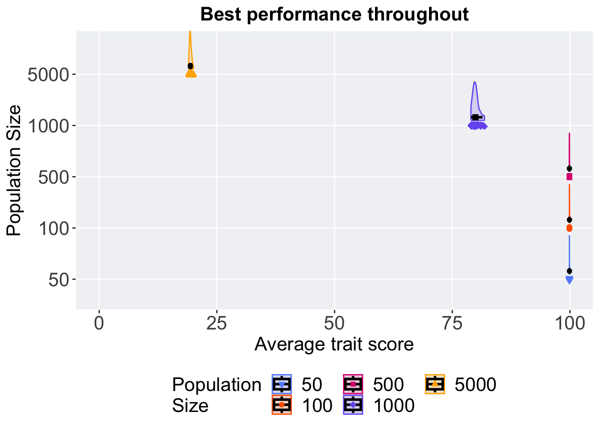

Chapter 2 Exploitation rate diagnostic results
Here we report the performance and evaluation a satisfactory solution was found on the exploitation rate diagnostic. 50 replicates were conducted for each population size explored. Performance is defined at the average trait performance, where we collect the best performing solution in each generation over time and the best performing solution evolved. A satisfactory solution is defined as a solution that has a phenotype with all traits greater than or equal to 99.0.
2.1 Analysis setup
library(ggplot2)
library(cowplot)
library(dplyr)
library(PupillometryR)
# over time data
over_time <- read.csv("../Paper_Data/Exploitation/ot.csv", header = TRUE, stringsAsFactors = FALSE)
over_time$pop_size <- factor(over_time$pop_size, levels = NAMES)
# best performance data
best <- read.csv('../Paper_Data/Exploitation/best.csv', header = TRUE, stringsAsFactors = FALSE)
best$pop_size <- factor(best$pop_size, levels = NAMES)
# get the data
ssf <- read.csv('../Paper_Data/Exploitation/ssf.csv', header = TRUE, stringsAsFactors = FALSE)
ssf$pop_size <- factor(ssf$pop_size, levels = NAMES)
ssf <- filter(ssf, evaluation <= 1.5*10^9)2.2 Performance over time
Performance of the best solution in the population at each generation over time.
# aggregate
lines = over_time %>%
group_by(pop_size, eval) %>%
dplyr::summarise(
min = min(performance),
mean = mean(performance),
max = max(performance)
)
lines$pop_size <- factor(lines$pop_size, levels = NAMES)
ggplot(lines, aes(x=eval, y=mean, group = pop_size, fill = pop_size, color = pop_size, shape = pop_size)) +
geom_ribbon(aes(ymin = min, ymax = max), alpha = 0.1) +
geom_line(linewidth = 0.5) +
geom_point(data = filter(lines, eval %% 100000000 == 0 & eval != 0), size = 1.0, stroke = 2.0, alpha = 1.0) +
scale_y_continuous(
name="Average trait score",
limits=c(0, 100),
breaks=seq(0,100, 25),
labels=c("0", "25", "50", "75", "100")
) +
scale_x_continuous(
name="Evaluation",
labels = c('0.0e+0', '5.0e+8','1.0e+9','1.5e+9'),
limits = c(0,1520000000)
) +
scale_shape_manual(values=SHAPE)+
scale_colour_manual(values = cb_palette) +
scale_fill_manual(values = cb_palette) +
ggtitle('Performance over time')+
p_theme +
guides(
shape=guide_legend(nrow=2, title.position = "left", title = 'Population\nSize'),
color=guide_legend(nrow=2, title.position = "left", title = 'Population\nSize'),
fill=guide_legend(nrow=2, title.position = "left", title = 'Population\nSize')
)2.3 Best performance evolved
Performance of the best solution found throughout the entire evolutionary run.
ggplot(best, aes(x = pop_size, y = performance, color = pop_size, fill = pop_size, shape = pop_size)) +
geom_flat_violin(position = position_nudge(x = .1, y = 0), scale = 'width', alpha = 0.2, width = 1.5) +
geom_boxplot(color = 'black', width = .07, outlier.shape = NA, alpha = 0.0, size = 1.0, position = position_nudge(x = .16, y = 0)) +
geom_point(position = position_jitter(width = 0.02, height = 0.0001), size = 1.5, alpha = 1.0) +
scale_y_continuous(
name="Average trait score",
limits=c(0, 100),
breaks=seq(0,100, 25),
labels=c("0", "25", "50", "75", "100")
) +
scale_x_discrete(
name="Population Size"
)+
scale_shape_manual(values=SHAPE)+
scale_colour_manual(values = cb_palette, ) +
scale_fill_manual(values = cb_palette) +
ggtitle('Best performance throughout')+
p_theme+ coord_flip() +
guides(
shape=guide_legend(nrow=2, title.position = "left", title = 'Population\nSize'),
color=guide_legend(nrow=2, title.position = "left", title = 'Population\nSize'),
fill=guide_legend(nrow=2, title.position = "left", title = 'Population\nSize')
)
2.3.1 Summary statistics
best %>%
group_by(pop_size) %>%
dplyr::summarise(
count = n(),
na_cnt = sum(is.na(performance)),
min = min(performance, na.rm = TRUE),
median = median(performance, na.rm = TRUE),
mean = mean(performance, na.rm = TRUE),
max = max(performance, na.rm = TRUE),
IQR = IQR(performance, na.rm = TRUE)
)## # A tibble: 5 × 8
## pop_size count na_cnt min median mean max IQR
## <fct> <int> <int> <dbl> <dbl> <dbl> <dbl> <dbl>
## 1 50 50 0 99.9 99.9 99.9 99.9 0.0149
## 2 100 50 0 99.9 99.9 99.9 99.9 0.0166
## 3 500 50 0 99.9 99.9 99.9 99.9 0.0235
## 4 1000 50 0 79.0 79.9 80.0 81.8 0.779
## 5 5000 50 0 19.0 19.4 19.4 20.0 0.2992.3.2 Kruskal-Wallis test
##
## Kruskal-Wallis rank sum test
##
## data: performance by pop_size
## Kruskal-Wallis chi-squared = 198.29, df = 4,
## p-value < 2.2e-162.3.3 Pairwise wilcoxon test
pairwise.wilcox.test(x = best$performance, g = best$pop_size, p.adjust.method = "bonferroni",
paired = FALSE, conf.int = FALSE, alternative = 'l')##
## Pairwise comparisons using Wilcoxon rank sum test with continuity correction
##
## data: best$performance and best$pop_size
##
## 50 100 500 1000
## 100 1.00000 - - -
## 500 0.00078 0.00059 - -
## 1000 < 2e-16 < 2e-16 < 2e-16 -
## 5000 < 2e-16 < 2e-16 < 2e-16 < 2e-16
##
## P value adjustment method: bonferroni2.4 Evaluation satisfactory solution if found
Evaluation a satisfactory solution is found for each population size.
ggplot(ssf, aes(x = pop_size, y = evaluation, color = pop_size, fill = pop_size, shape = pop_size)) +
geom_flat_violin(position = position_nudge(x = 0.12, y = 0), scale = 'width', alpha = 0.2, width = 1.5) +
geom_boxplot(color = 'black', width = .08, outlier.shape = NA, alpha = 0.0, size = 0.8, position = position_nudge(x = .19, y = 0)) +
geom_point(position = position_jitter(width = 0.03, height = 0.000001), size = 1.5, alpha = 1.0) +
scale_y_continuous(
name = 'Evaluation',
breaks = c(100000000,500000000,1000000000,1500000000),
labels = c('1.0e+8', '5.0e+8','1.0e+9','1.5e+9'),
limits = c(100000000,1500000000)
) +
scale_x_discrete(
name="Population Size",
)+
scale_shape_manual(values=SHAPE, )+
scale_colour_manual(values = cb_palette, ) +
scale_fill_manual(values = cb_palette) +
ggtitle(bquote('Evaluation Satisfactory Solution Found'))+
p_theme + coord_flip() +
guides(
shape=guide_legend(nrow=2, title.position = "left", title = 'Population\nSize'),
color=guide_legend(nrow=2, title.position = "left", title = 'Population\nSize'),
fill=guide_legend(nrow=2, title.position = "left", title = 'Population\nSize')
)2.4.1 Summary statistics
ssf %>%
group_by(pop_size) %>%
dplyr::summarise(
count = n(),
na_cnt = sum(is.na(evaluation)),
min = min(evaluation, na.rm = TRUE),
median = median(evaluation, na.rm = TRUE),
mean = mean(evaluation, na.rm = TRUE),
max = max(evaluation, na.rm = TRUE),
IQR = IQR(evaluation, na.rm = TRUE)
)## # A tibble: 3 × 8
## pop_size count na_cnt min median mean max IQR
## <fct> <int> <int> <dbl> <dbl> <dbl> <dbl> <dbl>
## 1 50 50 0 1.35e8 2.13e8 2.52e8 8.04e8 1.32e8
## 2 100 50 0 2.55e8 3.38e8 3.65e8 8.83e8 8.37e7
## 3 500 50 0 1.16e9 1.27e9 1.28e9 1.44e9 9.10e72.4.2 Kruskal-Wallis test
##
## Kruskal-Wallis rank sum test
##
## data: evaluation by pop_size
## Kruskal-Wallis chi-squared = 113.38, df = 2,
## p-value < 2.2e-162.4.3 Pairwise wilcoxon test
pairwise.wilcox.test(x = ssf$evaluation, g = ssf$pop_size, p.adjust.method = "bonferroni",
paired = FALSE, conf.int = FALSE, alternative = 'g')##
## Pairwise comparisons using Wilcoxon rank sum test with continuity correction
##
## data: ssf$evaluation and ssf$pop_size
##
## 50 100
## 100 3.1e-08 -
## 500 < 2e-16 < 2e-16
##
## P value adjustment method: bonferroni